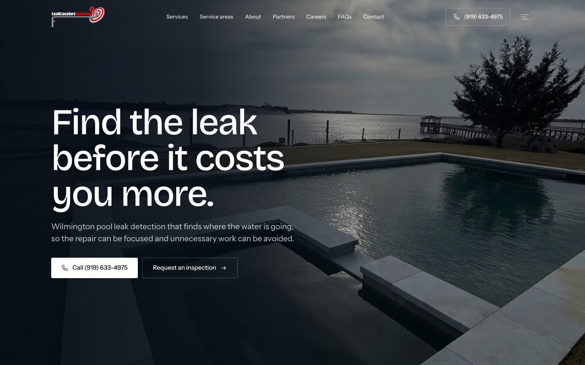
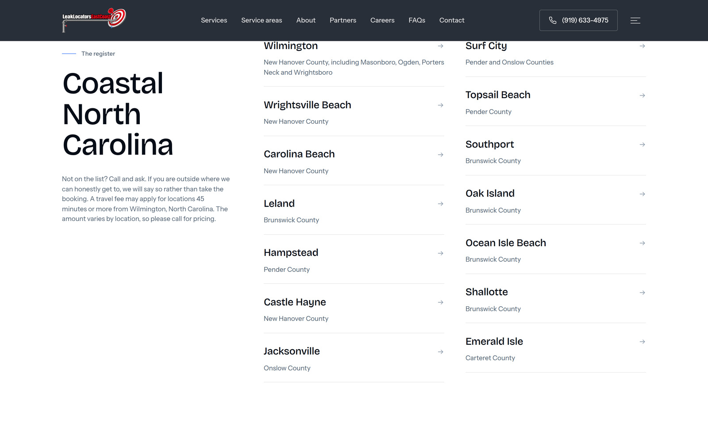

KREATED
LOCAL
SEO.
Two sites. 28 service-area pages.
The homepage
leaklocatorseastcoast.com

Service areas
leaklocatorseastcoast.com/service-areas

Leak Locators East Coast — Wilmington, NC
03
/ 05